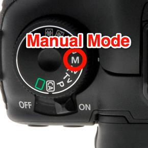

Photography Basics
The Main Settings
If you want to take photos more efficiently, you should do it in manual mode on your camera:
In a manual mode, you should always set 3 main options in order to an environment: Shutter Speed, Aperture and ISO:

Also
Besides, such things like white balance, focal length and an exposure ought to be taken into account.
Don't forget about an atmosphere, foreshortening and post-processing - these thing must satisfy your ideas.
And the main criteria of the best style of taking photographs is not to be afraid of doing experiments - trying new styles or strange locations.
Contact me
- +380964133689
- berlinsky.yar@gmail.com
 Instagram
Instagram